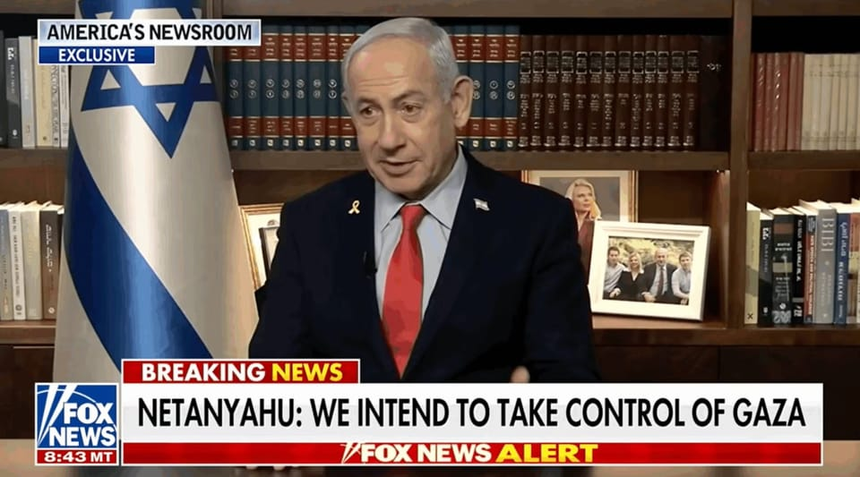

世界苦茶08月08日新闻 | 41条 | 以色列内阁通过占领加沙决议

以色列内阁通过占领加沙决议 | OpenAI发布GPT-5 | 中国7月出口增长7.2% | 菲律宾表态介入台海战争 | 柯文哲庭审开始 | 美国悬赏5000万逮捕马杜罗
新Substack文章，每週2-3更，歡迎關注
每日三條新聞解析
苦茶数据
美元兑人民币：7.18（昨日7.18，前日7.19）
美元兑日元：147.32（昨日147.30，前日147.36）
上证指数：3635（昨日3637，前日3627）
标普500指数：6340（昨日6345，前日6299）
比特币：116588（昨日114263，前日113458）
布伦特原油：66.15（昨日67.37，前日68.07）
中国新闻
• 西藏清洁能源占比近百 ：中国官方公布，2024年西藏清洁能源发电量占比近100%，成为全国清洁能源发电量占比最高的地区。据中新社报道，西藏自治区党委书记王君正星期二在中国国务院新闻发布会上说，近年来，西藏深入推动低碳发展，依托世界级水能、风能和太阳能资源，加快清洁能源基地建设。王君正介绍，西藏去年清洁能源发电量占比超过99%，基本实现全清洁电力供应，成为全国清洁能源发电量占比最高的地区。
• 佛协回应释永信事件 ：中国少林寺原住持释永信7月27日被查后，中国佛教协会星期四坦言，佛教教职人员管理制度仍存在漏洞，一些人员在个人修行上放逸懈怠。中国佛教协会星期四在官网发文说，释永信的所作所为，不仅葬送了个人的法身慧命，还败坏了佛教教风，破坏了出家人的社会形象，给佛教的健康传承造成严重负面影响。文章称，以戒为师、严持净戒，不仅是佛教徒个人的私事，更是关系佛教形象的大事，是关系佛教前途命运的大事。
• 周口女医生遭网暴坠亡 ：中国河南省周口市一家医院的妇产科医生因不堪网暴坠楼身亡，涉事医院称，院方在邵医生坠亡当日与她开会，给医疗纠纷的当事人发律师函。澎湃新闻星期四引述周口市第六人民医院相关负责人称，她目前接到的消息，指这起案件已经进入司法程序，正在调查中。她介绍，是邵医生家属报案，她不清楚家属目前是否拿到受理或立案通知书。上述负责人还称，就在邵医生出事那天下午两点半，院方曾和邵医生开会，给三起医疗纠纷的当事人发了律师函，要求他们通过合理合规渠道维权。
• 台查16家陆企挖角窃密案 ：台湾调查局8月7日表示，侦办16家大陆企业挖角窃密案，分别查获中国最大的IT企业航嘉驰源，以及中国最大的电路板制造商胜宏科技等大陆企业，在台私设据点及挖角工程师。台湾调查局指出，自7月15日至8月6日动员超 300人次，搜索70处所，询问120人次。调查局指出，高科技产业为台湾经济命脉，相关人才为陆企锁定挖角对象，因此针对大陆企业挖角窃密案件进行重点打击。大陆企业挖角的方式，多通过假台资或假侨外资在台设点、未经核准私设据点、通过人力资源管理公司虚假派遣员工等方式，掩饰其中资身份，借此非法在台挖角高科技人才。
• 泰起诉中企涉伪造建筑案 ：泰国总检察署起诉国家审计局大楼的中国发展商、泰国籍建筑大亨和多家涉案机构及个人。综合外电报道，泰国总检察长办公室星期四说，案件已经提交至刑事法庭，预计几个月内将作出裁决。检方在声明中说：“调查人员同意以职业过失和伪造文件为由，起诉23名嫌疑人和法人实体。”
• 中国脑机接口制定目标 ：中国七部门联合提出，到2027年，脑机接口关键技术取得突破。据央视新闻报道，中国工业和信息化部、国家发展改革委、教育部、国家卫生健康委、国务院国资委、中国科学院、国家药监局发布关于推动脑机接口产业创新发展的实施意见。意见提出，到2027年，脑机接口关键技术取得突破，初步建立先进的技术体系、产业体系和标准体系。电极、芯片和整机产品性能达到国际先进水平，脑机接口产品在工业制造、医疗健康、生活消费等加快应用。产业规模不断壮大，打造两至三个产业发展集聚区，开拓一批新场景、新模式、新业态。
• 岳阳货车撞奶茶店致2死 ：中国湖南省岳阳市发生一起货车冲撞奶茶店事故，造成四人受伤，其中两人伤重不治。湖南省岳阳市一起意外事故的视频，星期三起在社媒平台流传。视频显示，洞庭南路附近一辆印有“库迪”商标的小型卡车，冲撞进一家茶颜悦色门店。《四川日报》引述目击者报道，事发后有人躺在地上，现场多人自发聚集帮忙抬车。同日深夜，岳阳楼区公安分局在官方微信号通报这起事故。
• 少林寺否认僧人离职潮 ：针对网传新住持掌舵后引发僧人离职潮，少林寺回应称，未曾听说有人离职。“少林寺离职潮”的话题星期二登上中国社群热搜榜，有的传言称已跑了30多个僧人，主要集中在仰赖商业活动的武僧、员工，以及习惯宽松管理的年轻和尚。少林寺原住持释永信7月27日通报被查后，新住持印乐上任第二天，中国媒体实地报道，寺庙已取消之前的一些收费项目，包括佛殿前的“平安香”等高价香已消失，举着二维码收费的武僧也不见踪影。网传少林寺不少僧人因受不了新规而离开。
• 天安门地区实施交通管制 ：中国北京市官方宣布，这个周末对天安门地区及相关道路分时、分段采取临时交通管理措施。北京市公安局公安交通管理局星期三发布通告称，为保障专项活动安全顺利，决定采取上述措施。根据发布在官网的通告，除持有活动专用证件的车辆外，其他车辆将从星期六傍晚6时起被禁止在受影响道路和地点通行，一直到活动结束为止。官方未进一步说明活动详情。
亚太印太新闻
• 柯文哲庭审爆粗丢杯 ：涉及京华城案的台湾民众党前主席柯文哲星期四出庭面控，休庭期间突然对执行公诉的检察官爆粗口，并将水杯丢向检察官席。检察单位谴责柯文哲进行人身攻击，并呼吁柯文哲遵守法庭秩序。综合台湾《联合报》《自由时报》和壹苹新闻网报道，台北地方法院星期四开庭全天候审理京华城弊案、政治献金案，传唤前台北市长副秘书长李得全、前台北副市长黄珊珊出庭作证，并再度提讯在押中的柯文哲出庭。柯文哲于休庭时间，对三名执行公诉的检察官爆粗口，并将盛水的水杯丢向在对面的检察官席。
• 小马可斯谈台海冲突立场 ：菲律宾总统小马可斯告诉印度媒体，如果台海爆发冲突，菲律宾无法置身事外。小马可斯接受印度《第一邮报》访问时说，如果中国大陆和台湾爆发冲突，菲律宾无法置身事外，也会为了保护菲国公民而卷入其中。他也说，台湾有大量菲律宾侨民。 （翻评：现在明确表态要介入的是英国、澳大利亚、菲律宾，日本应该表态。）
• 泰柬签署边界停火协议 ：泰国代表星期四在泰柬边界联合委员会正式会议后宣布，已与柬埔寨就边界问题达成共识并签署协议，双方同意维持停火。综合外电报道，泰国代国防部长那他邦星期四说，泰国和柬埔寨同意让亚细安作为两国停火的观察员。他在马来西亚吉隆坡与柬埔寨防长迪世哈会晤后说，泰柬两国同意保持沟通，并通过双边机制处理问题。
• 台积电工程师涉窃密购豪宅 ：台积电发生内鬼窃取机密案，三人涉嫌违反国安法犯罪被羁押。台媒报道，有被收押的工程师近一年内曾突然间耗资近亿元新台币，连续在新竹市购买了两栋豪宅。台湾中时新闻网引述知情人士报道，由于这名吴姓工程师年资不深，购买豪宅的价格，与吴姓工程师的财力明显不符，引起检调怀疑有不明财产来源，因此决定由幕后金流着手。中时新闻网也报道，在日商设备大厂担任工程师的台积电离职陈姓工程师，涉嫌勾结台积电吴姓、戈姓工程师及其余多名现职员工，自去年起疑似利用远端上班期间，大量翻拍2纳米制程机密，拍成上千张照片，转传泄漏给陈男。
• 缅甸代总统敏瑞病逝 ：媒体报道，缅甸代总统敏瑞因病逝世。法新社报道，缅甸军政府星期四发声明说，现年74岁的缅甸代总统敏瑞星期四早上8时28分，在内比都一家医院病逝。声明也说，将以国葬礼遇为敏瑞举行葬礼。据称，敏瑞生前患有帕金森氏症。
科技新闻
• 美拟为AI芯片加追踪功能 ：美国政府正在探索在人工智能晶片加入更先进的定位追踪功能，以防堵英伟达等美国公司的高端晶片流向中国。白宫科学与技术政策办公室主任克拉齐奥斯星期二在韩国首尔接受彭博电视访问时，证实华盛顿正在探索对高端晶片进行追踪的计划。“我们正在探讨是否可能通过某类软件或修改晶片的硬件，来更好地进行定位追踪...... 这是我们准备做的一件事。”
• OpenAI 发布旗舰模型 GPT-5 ：OpenAI 周四发布了全新的旗舰 AI 模型 GPT-5，它将为公司下一代 ChatGPT 提供支持。GPT-5 是 OpenAI 首个“统一”AI 模型，它将 O 系列模型的推理能力与 GPT 系列的快速响应能力相结合。GPT-5 不再要求用户选择正确的设置，而是配备了一个实时路由器，可以自主决定是快速回复用户问题，还是花费更多时间“思考”答案。在 SWE-bench Verified 中，GPT-5 首次尝试得分高达 74.9%。在“人类的最后考试”中，GPT-5 的扩展推理版本在使用工具的情况下得分为 42%。ChatGPT Plus 订阅用户可获得比免费用户更高的使用限制。Pro 订阅用户将可以无限制使用 GPT-5 以及 GPT-5 Pro 。OpenAI 的 Team、Edu 和 Enterprise 套餐用户将于下周将 GPT-5 作为其默认模型。对于开发者来说，GPT-5 将以推出三种版本的 API。GPT-5 基础模型的费用为每百万输入 token 1.25 美元，每百万输出 token 10 美元。
• 微软集成 GPT-5 进 Copilot ：微软将OpenAI的GPT-5集成到其Copilot生态系统中，包括Microsoft365 Copilot、GitHub Copilot、AzureAI Foundry和Copilot Studio。新的智能模式支持动态模型切换，以增强推理和特定任务的响应。Microsoft365 Copilot现在提供了对复杂查询的改进上下文理解和处理，而GitHub Copilot用户可以访问GPT-5的高级代码编写功能。GPT-5有四个版本，针对逻辑、多步骤任务和多模态企业应用进行了优化。开发人员可以通过AzureAI Foundry利用GPT-5，利用其模型路由器来确保AI驱动的应用程序中特定于任务的精度。
• OpenAI发150万美元奖金 ：人工智能巨头 OpenAI 已为每位员工提供为期两年、总额 150 万美元的奖金，与 Meta 及其他科技巨头展开人才争夺战。Hyperbolic 联合创始人兼首席技术官、前 OctoAI 高管金宇辰周四在 X 上披露了薪酬变动。“我的 OpenAI 朋友们现在非常兴奋——不是因为这是 GPT-5 的前夜，而是因为 Sam 刚刚宣布每位员工两年内将获得 150 万美元的奖金，”金宇辰写道。他补充道：“英伟达 78% 的员工都是百万富翁。在 OpenAI，这个比例是 100%。”奖金公告是在 Meta 首席执行官马克·扎克伯格的“黑手党”式挖角策略加剧了硅谷人工智能人才竞争之际发布。OpenAI 首席执行官 Sam Altman 此前在一次播客采访中以“来吧”的口吻回应了 Meta 的挑战。
财经新闻
• 美关税月收500亿美元 ：随着美国对数十个国家的进口商品加征关税生效，美国商务部长卢特尼克预计美国每月的关税收入将达到500亿美元。卢特尼克星期四接受福克斯商业频道采访时说：“接下来我们还会从半导体、药品，以及各类产品中获得更多的关税收入。”美国原定要在8月12日前与中国达成贸易协议，卢特尼克指出，有可能再次延长相关期限。
• 瑞士总统关税游说失败 ：知情者人士称，瑞士总统凯勒-祖特尔即将离开华盛顿，但未能成功降低美国对瑞士征收39％的关税税率。彭博社引述一名不愿具名的知情者报道，由凯勒-祖特尔率领的代表团向美国官员提交一项新提案，但他们不指望在离开美国前能为瑞士争取到更好的协议。凯勒-祖特尔和财长帕姆兰星期二前往华盛顿与美方展开会谈，降低瑞士面对的39%关税率。
• 台积电美设厂免高关税 ：台湾的国家发展委员会主任委员刘镜清在立法院备询时说，台积电在美国设厂，将豁免美国总统特朗普宣布的对进口半导体征收100%关税。综合台湾《联合报》和三立新闻网等报道，也是台积电法人董事的刘镜清，星期四受邀赴立法院经济委员会作专案报告，在接受立委询问时，作出上述回应。他说，现在半导体厂商有三种模式应对美国开征的100%关税。像台积电赴美建厂，或是像台企“中美晶”透过并购得州厂在美国生产都可以免税。像联电透过与英特尔合作，也可以豁免关税。
• 中国拟减百万母猪稳价 ：中国希望能减少猪只数量，以矫正产能过剩从而稳定价格。路透社引述该社所获官方通知报道，中国养猪业代表下个星期齐聚北京，讨论如何将繁殖母猪数量减少100万头。这将是解决产能过剩和稳定价格的举措之一。中国拥有全球一半的猪只。在消费需求疲软的背景下，中国庞大的生猪养殖业面临供应过剩的情况。 （翻評：豬肉也產能過剩了。这个机制和过度投资可能不同，主要还是消费下滑。）
• 莫迪回应美关税表示，不损农民 ：关于美国征收50%关税，印度总理莫迪说，即使为此付出沉重代价，他也不会损害印度农民的利益。路透社报道，莫迪星期四说：“对我们来说，农民的福祉至上。印度永远不会在农民、奶制品行业和渔民的福祉上妥协。我知道将为此付出沉重代价。”这是美国总统特朗普宣布对印度商品征收50%关税后，莫迪首次发表上述言论。
• 中国7月出口增长7.2% ：中国官方发布的最新数据显示，以美元计，中国7月出口同比增长7.2%。据中国央视新闻报道，中国海关总署星期四公布的数据显示，中国今年前七个月的货物贸易保持向上向好势头，进出口总值25.7万亿元人民币，同比增长3.5%，增速较上半年加快0.6个百分点。其中对亚细安、欧盟、非洲、中亚进出口分别增长9.4%、3.9%、17.2%、16.3%。中国7月份进出口3.91万亿元，增长6.7%。其中出口2.31万亿元，增长8%；进口1.6万亿元，增长4.8%。
• 三星SK海力士豁免美关税 ：韩国产业部长呂翰九说，晶片制造商三星电子和SK海力士将不会受到美国半导体100%关税的约束。路透社报道，呂翰九星期四说，根据美韩达成的贸易协议，韩国将在众多国家中享受到美国最优惠的晶片关税税率。三星已在德克萨斯州奥斯汀和泰勒投资两家晶片制造厂，而SK海力士则宣布计划在印第安纳州建造一座先进的晶片封装厂和一座人工智能产品研发中心。（翻評：所以這個半導體關稅就是卡中國馬來西亞菲律賓。）
• 特朗普签署行政令允许养老金投资另类资产： 当地时间周四，美国总统特朗普签署了一项行政命令，允许美国人的401(k)计划投资私募股权基金、比特币等加密货币以及其他所谓的另类资产。这一决定标志着美国养老金投资领域的一项重大政策转向。该行政令为私募股权和其他基金管理公司利用数万亿美元的美国人退休储蓄铺平了道路。这可能会为股票、债券和现金以外的另类资产管理公司开辟一个巨大的新资金来源。白宫发布的行政令摘要称：“SEC必须考虑一些途径，为固定缴款型退休计划的参与者获取另类资产投资提供便利。该行政令指示劳工部长与财政部、SEC 和其他联邦监管机构等协商，并“重新审查”之前的指导意见。
• 美关税重创印尼虾业出口 ：美国向印度尼西亚征收19%关税可能导致印尼今年的虾类出口暴跌约三成，危及100万工人的生计。印尼业者为此寻找新的出口市场，目前正积极扩展中国市场，以减少对美国的依赖。美国是印尼最大的虾类出口市场，占去年印尼出口总额的60%，达16亿8000万美元。印尼出口到中国的虾类只占印尼总出口的2%。印尼水产加工与营销企业家协会主席布迪说，尽管美国和印尼7月达成贸易协议，但大多数美国客户仍暂停采购印尼养殖的虾。
俄乌战争
• 特朗普或与普京泽连斯基会晤 ：白宫官员8月6日称，特朗普最快将于下周会见普京。目前尚未确定会面的时间地点。如果成行，这将是自2021年6月以来两国总统的首次面对面会晤。此外，特朗普也愿意与普京和泽连斯基举行三边会晤。普京当天稍早与到访的美国中东问题特使威特科夫会谈。俄罗斯总统助理乌沙科夫表示会谈有益且具有建设性，双方已就乌克兰问题交换了“信号”，讨论了两国战略合作发展的可能性。但他拒绝在威特科夫向特朗普汇报前透露更多。泽连斯基表示，他相信压力对俄罗斯起到了作用，俄罗斯现在更“倾向于”停火。不过美国国务卿鲁比奥就可能的会晤表示，虽然特朗普与普京和泽连斯基的会面有助于达成协议，但各方必须在这一点上足够接近，会议才能富有成效且值得做。当前有很多工作要做，有很多障碍需要克服。6日早些时候，白宫官员预计美国仍将在8日对俄罗斯实施“次级制裁”。彭博社和俄罗斯独立媒体The Bell报道，白俄罗斯总统卢卡申科上周与普京会晤时提及，俄罗斯可能会提议暂停俄乌两国的空袭。但接近克里姆林宫的消息人士称，普京相信自己正赢得战争，不太可能屈服于特朗普关于制裁的最后通牒，他的军事目标优先于改善俄美关系。他还怀疑美国更多的制裁是否会产生很大的影响。
• 泽连斯基称中方雇佣兵参战 ：乌克兰总统泽连斯基指有来自中国的雇佣兵为俄罗斯作战，中国外交部回应说，中方在乌克兰危机问题上劝和的立场一贯明确，且多次发布安全提醒，要求公民避免以任何形式卷入冲突。据早前报道，泽连斯基星期一说，乌东北部的军队正与来自中国、塔吉克斯坦、乌兹别克斯坦、巴基斯坦和非洲等多个国家的外国雇佣兵作战，并誓言将作出回应。据中国外交部网站消息，发言人郭嘉昆星期三答记者问时针对上述说法指，在乌克兰危机问题上，中方的立场一贯、明确，始终致力于劝和促谈，推动止战停火。
国际新闻
• 以色列安全内阁8月8日凌晨批准了总理内塔尼亚胡占领加沙城的提议： 总理办公室称，安全内阁批准了内塔尼亚胡击败哈马斯的提议，以色列国防军准备“接管”加沙城，同时向战区外的平民提供人道主义援助。以色列官员称，根据该提议，以色列将包围加沙城并将约百万居民迁移到加沙南部；将搭建建筑以安置巴勒斯坦难民；将加沙人道主义基金会的援助分发点数量从目前的4个增加到16个。此后，以军将瞄准加沙城的“恐怖分子据点”，并将行动扩大到中部难民营。行动预计需要至少6个月。内塔尼亚胡认为，这是击败哈马斯的唯一途径。他7日受访时说，准备在军事上接管整个加沙，瓦解哈马斯，并将控制权移交给另一个权力机构。安全内阁还通过了结束战争的五项原则，即解除哈马斯的武装，归还所有人质或人质遗体，加沙地带非军事化，以色列维持对加沙的安全控制，以及建立不受哈马斯或巴勒斯坦权力机构控制的文官政府。
• 特朗普欲派国民警卫队维稳 ：美国总统特朗普暗示，他可能会动用国民警卫队来维护华盛顿特区的治安，并威胁要让联邦政府接管华盛顿特区。路透社报道，特朗普星期三说：“我们的首都非常不安全，我们必须管理好华盛顿特区。这里必须成为全国治理得最好的地方。”特朗普曾多次威胁要让联邦政府接管华盛顿特区。在政府效率部门一名年轻职员上周末遭到袭击后，特朗普再次发出威胁。
• 美提议黎解武真主党 ：路透社审阅的一份黎巴嫩内阁议程副本显示，美国向黎巴嫩提出一项提案，要求黎巴嫩在今年年底前解除伊朗支持的真主党武装，同时结束以色列在黎巴嫩的军事行动并从黎南部五个地点撤军。这项提案由美国驻土耳其大使兼美国叙利亚问题特使巴拉克提交，并在星期四的黎巴嫩内阁会议中进行讨论。提案详细列出迄今为止解除真主党武装的最具体步骤。真主党自去年与以色列爆发毁灭性冲突以来一直拒绝解除武装。黎巴嫩信息部长莫尔科斯在星期四的内阁会议后说，内阁仅批准美国提案的目标，即在年底前解除真主党武装并结束以色列在黎巴嫩的军事行动，但他们没有讨论提案的全部细节。
• 美法院系统遭黑客入侵 ：消息称，美国联邦司法机构的电子立案系统在一次大规模黑客攻击中遭到入侵，据信已泄露多个州的机密法院数据。美国政治新闻网站Politico星期三引述两名知情人士报道，这次事件影响司法机构的联邦案件管理系统。系统包括法律专业人士用于上传和管理案件文件的案件管理和电子案件档案，以及向公众提供部分相同数据付费访问的法院电子记录公共访问系统。Politico并未透露这次黑客攻击背后是否涉及任何组织，但案件管理系统长期以来一直是外国间谍的目标。
• 苏丹空军击落阿联酋飞机 ：苏丹空军8月6日在该国西部南达尔富尔州首府尼亚拉摧毁一架据称载有哥伦比亚籍雇佣兵的阿联酋飞机，造成数十名雇佣兵死亡。苏丹军方称，这架飞机从海湾地区一空军基地起飞，至少载有40人，旨在为苏丹快速支援部队输送人员和装备。苏丹武装部队情报部门实时监控飞机动向，当飞机降落在尼亚拉国际机场后立即实施打击。苏丹快速支援部队和阿联酋方面尚未就相关报道作出回应。苏丹民航局当天称，阿联酋已禁止苏丹航空公司航班在阿联酋机场降落，当天还禁止一架苏丹航空公司客机从阿布扎比机场起飞。苏丹航空公司消息人士称，阿联酋当局的理由是苏丹航空公司不符合运营标准，此举导致当天计划从苏丹港机场飞往阿联酋的多个航班取消。长期以来，苏丹政府在不同场合多次指责阿联酋支持苏丹快速支援部队、向其提供武器和资金，阿联酋均予以否认。8月4日，苏丹外交部指责阿联酋招募、资助哥伦比亚籍雇佣兵为苏丹快速支援部队作战，对抗苏丹武装部队。阿联酋对此予以否认。
• 卢比奥命令美国外交官针对欧洲数字法展开游说： 路透社看到的一份内部外交电报显示，美国特朗普政府已指示美国驻欧洲外交官发起游说活动，为反对欧盟的《数字服务法案》争取支持。华盛顿称该法案扼杀言论自由对美国科技公司施加成本。美国国务院在一份日期为8月4日、由国务卿卢比奥签署的电报中表示，欧盟在打击仇恨言论、错误信息和虚假信息的过程中，对言论自由施加 “不当” 限制，而 《数字服务法案》正在进一步加强这些限制。电报标题将其称为 “行动请求”，要求美国驻欧洲各国大使馆外交官定期与欧盟政府和数字服务机构接触，传达美国对《数字服务法案》和美国公司财务成本的担忧。
• 司法部长邦迪悬赏5000万美元，以逮捕委内瑞拉总统尼古拉斯·马杜罗： 司法部长帕姆·邦迪周四宣布，将悬赏5000万美元，以奖励提供线索，帮助逮捕委内瑞拉总统尼古拉斯·马杜罗的人员。司法部和国务院宣布了悬赏金额，此前的金额为2500万美元。美国指控马杜罗协助贩毒集团和街头帮派，并实施腐败和专制的政权。邦迪在一段视频讲话中表示：“马杜罗利用TdA、锡那罗亚和太阳卡特尔等外国恐怖组织，给我们国家带来致命暴力。他是世界上最大的贩毒集团之一，对我们的国家安全构成威胁。”